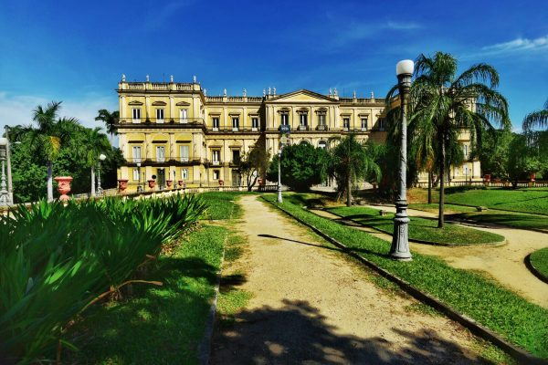
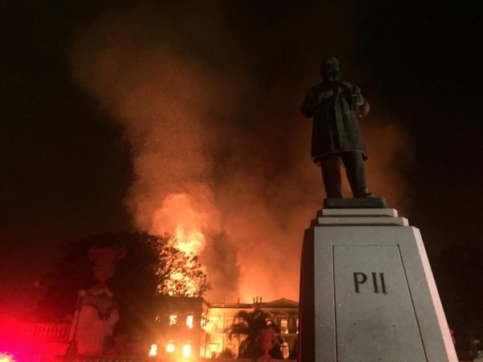
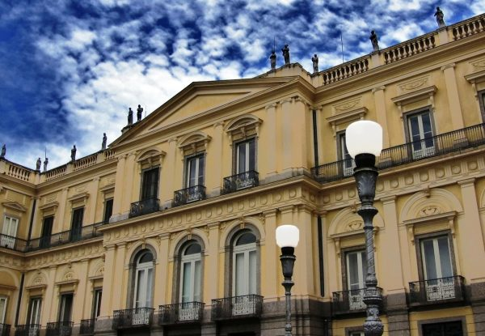

200 anos dos Museus no Brasil
Neste mês de junho, o Brasil comemora 200 anos da criação do primeiro museu brasileiro: o Museu Nacional e da presença contínua dos museus na vida social brasileira.
Desde sua criação, os museus se multiplicaram por todo território nacional. Hoje são mais de 3.800 instituições voltadas para a construção e ampliação de diálogos com suas comunidades.
CRIAÇÃO DO MUSEU NACIONAL
O Museu Nacional foi fundado no dia 06 de junho de 1818, por Dom João VI de Portugal, que tinha o objetivo de promover a cultura e a economia do país. Este espaço sempre funcionou como um museu de ciências naturais, possuía coleções de materiais botânicos, de minerais, de animais empalhados, de numismática, de obras de arte e de máquinas.

Era considerada a mais antiga instituição científica do país e um dos maiores museus de história natural e de antropologia das Américas, até 2018. Este edifício foi tombado pelo Instituto do Patrimônio Histórico e Artístico Nacional (IPHAN) em 1938. No ano de 1946 o Museu Nacional foi incorporado à Universidade Federal do Rio de Janeiro.
OBJETIVO DO MUSEU
Um dos principais objetivos do Museu Nacional sempre foi promover e difundir o conhecimento através do seu acervo. Também realizar pesquisas e formar recursos humanos e para produzir estudos científicos. E atuou na preservação do patrimônio histórico, natural e cultural até 2018.
INCÊNDIO NO MUSEU
Infelizmente na noite do dia 02 de setembro de 2018, logo após o encerramento do horário das visitas, um incêndio de grandes proporções atingiu o museu.

Por volta das 21h30, várias coleções e exposições que estavam nas partes frontais do edifício foram totalmente destruídas. Os guardas que faziam a segurança do local conseguiram deixar o local, e não foram registradas vítimas. No entanto, foi destruído mais de 90% do acervo do museu. Deixando inclusive sua estrutura ainda mais prejudicada.
ATUALMENTE
Infelizmente as exposições do Museu Nacional está fechado para visitação por tempo indeterminado. Porém, são realizados encontros semanais nos segundos e quartos domingos de cada mês. Ocorrem das 10h às 16h pela Seção de Assistência ao Ensino (SAE), que acontece em frente ao Museu Nacional.

São expostos alguns materiais de coleção didática e realizadas atividades educativas, aos frequentadores da Quinta da Boa Vista. A participação é totalmente gratuita. Essa é uma tentativa de manter o Museu Nacional presente nas atividades com o público.